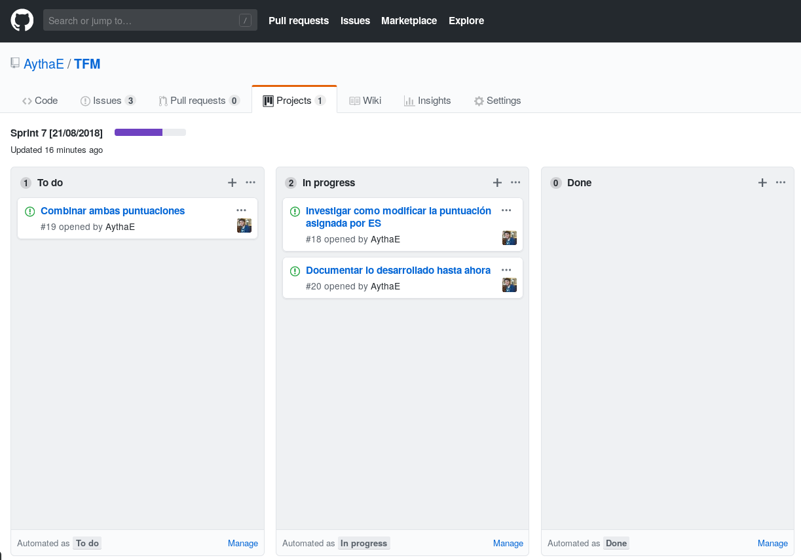
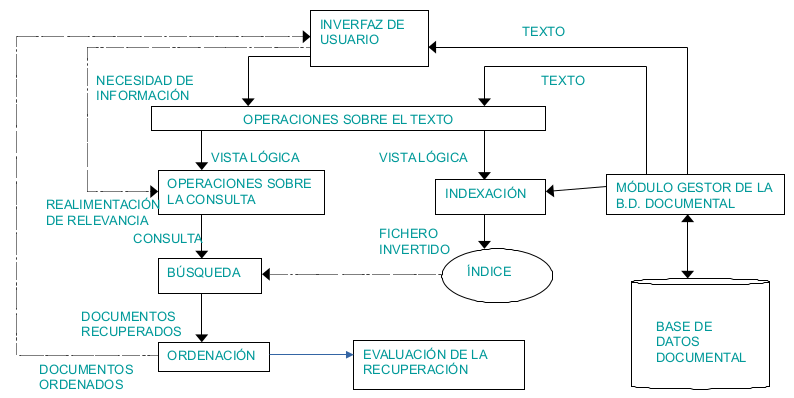
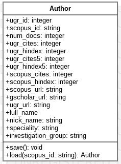
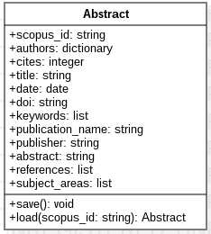
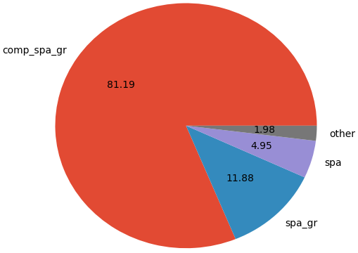

Trabajo de Fin de Máster
Desarrollo de un prototipo de motor de búsqueda que incorpore técnicas bibliométricas para mejorar la recuperación
Máster Universitario en Ingeniería InformáticaAutor: Aythami Estévez Olivas
Tutor: Juan Manuel Fernández Luna
Índice
- Objetivos
- Planificación
- Contexto
- Análisis
- Diseño
- Desarrollo
- Demostración
- Conclusiones y trabajos futuros
Objetivos
Objetivo Principal
Desarrollar un sistema de recuperación de información que incorpore medidas bibliométricas para mejorar la recuperación clásica
Otros Objetivos
- Descomponer el sistema RI: búsqueda autores y artículos
- Desarrollar sistema usable
Planificación
Temporal
| Tarea | Duración |
| Investigación | 8 semanas |
| Obtención de datos | 2 semanas |
| Procesado de datos | 2 semanas |
| Búsqueda básica | 2 semanas |
| Búsqueda con bibliometrı́a | 4 semanas |
| Refinamiento | 1 semana |
Coste
| Elemento | Coste |
| Recursos humanos | 4800€ |
| Hardware para el desarrollo | 55,55€ |
| Servidor | 440€ |
| Software | 0€ |
| Gastos editoriales | 0€ |
| TOTAL | 5295,55€ |
Metodología
Metodología ágil basada en SCRUM → Sprints
Contexto
Recuperación de información: Conceptos
- Disciplina que trata de modelar, diseñar e implementar sistemas capaces de proporcionar acceso basado en contenidos
- Relevancia y similitud
- Modelos: Booleano, Vectorial y Probabilístico
Recuperación de información: Componentes sistema
Bibliometría
- Análisis estadístico de publicaciones escritas. Se emplea para ofrecer análisis cuantitativo de la literatura científica.
- Número de citas, Índice H...
Análisis
Enfoque
Modelo clásico de RI con reordenación a priori de resultados en función a medidas directas y ordenación a posteriori utilizando un grafo de citación
Historias de usuario
- Seleccionar el método de ordenación a priori de los resultados de búsqueda
- Seleccionar el método de ordenación a posteriori de los resultados
- Realizar búsquedas de autores
- Realizar búsquedas de artı́culos
- Desplegar una vista detallada de un artı́culo
- Desplegar una vista detallada de un autor
Diseño
Modelo de datos


Arquitectura inicial
Desarrollo
Investigación
-
Primeros 4 Sprints de invetigación:
- Recuperación de información
- Bibliometría
- Estado del arte
- Pruebas con motores de búsqueda y conexiones APIs
Obtención de datos
- Ranking UGRinvestiga: 214 autores
- Scopus: 202 autores
Procesamiento de datos

- Limpieza de autores
- 164 Autores
- 891 Artículos
- 742 Referencias